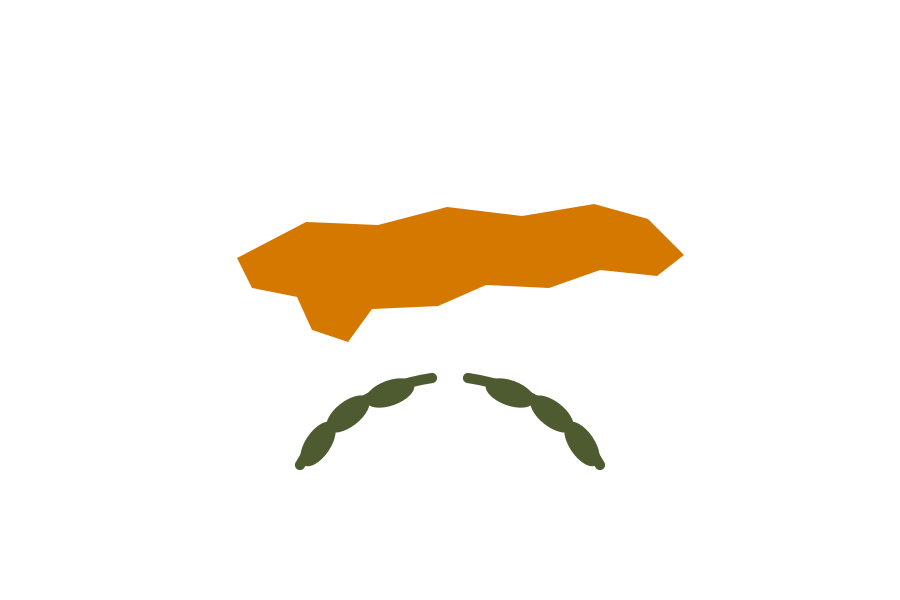

Das Zentrum in Nikosia ist kein bloßes Partnernetzwerk, sondern eine offizielle Rossotrudnitschestwo-Vertretung. Es bestand lange vor 2022 und ist nach dem Brand von 2023 spätestens 2024 sowie erneut 2026 mit Veranstaltungen in den eigenen Räumen nachweisbar. Eine Beendigung, Suspendierung oder Kündigung durch die Republik Zypern wurde nicht gefunden – ebenso wenig aber ein gesondertes Statusabkommen.
| Einrichtung | Russisches Zentrum für Wissenschaft und Kultur Nikosia (Russisches Haus) |
|---|---|
| Ort | Alasias 16, Nikosia |
| Eröffnung | 1978 |
| Status | Offizielle Rossotrudnitschestwo-Vertretung – die Behörde bezeichnete das Zentrum 2024 ausdrücklich als ihre Vertretung |
| Abkommen 1972 | Abkommen zwischen der UdSSR und der Republik Zypern über Zusammenarbeit in Wissenschaft, Bildung und Kultur, unterzeichnet am 24. Mai 1972 |
| Protokoll 2000 | Unterzeichnet am 11. Oktober 2000, zyprisches Ratifikationsgesetz 34(III)/2001 veröffentlicht am 31. Dezember 2001. Artikel 2 Nummer 2 bezeichnet das Abkommen von 1972 bis zu einer Neuregelung als fortgeltend |
| Inkrafttreten | Offen. Artikel 5 verlangt für das Inkrafttreten des Protokolls die letzte schriftliche Notifikation; deren Datum wurde nicht gefunden. Auch der Status im Jahr 2026 ist nicht abschließend verifiziert |
| Statusabkommen | Ein gesondertes Abkommen über Status, Privilegien, Steuer- oder Eigentumsfragen des Zentrums konnte nicht verifiziert werden |
| Brand 2023 | Ein Brand beschädigte am 26. April 2023 das damals renovierte Zentrum. Die russische Seite sprach zunächst von einem möglichen Anschlag; die zyprische Polizei erklärte im Juni 2023, es gebe keine Belege für Brandstiftung |
| Sanktionsrahmen | Die Gesetze 149(I)/2025 und 150(I)/2025 traten am 25. Juli 2025 in Kraft; sie kriminalisieren Verstöße gegen EU-Restriktionen und schaffen die National Sanctions Implementation Unit. Allgemeiner Rahmen, kein Einzelakt gegen das Haus |
| Status Juli 2026 | Film- und Kulturveranstaltungen im Zentrum belegen Präsenzbetrieb |
Zypern ist ein Beispiel für fortgesetzte Präsenz trotz EU-Listung. Daraus folgt vor allem eine methodische Warnung: EU-Listung, nationaler Vollzug und Schließung sind drei verschiedene Ebenen. Der zyprische Sanktionsrahmen von 2025 ist allgemeiner Natur; ein zentrumsspezifischer Konto-, Immobilien- oder Steuerbescheid wurde nicht gefunden. Leseregel: „Offen“ bedeutet, dass eine Aussage in den geprüften öffentlichen Quellen nicht belegt ist. Das ist kein Beweis des Gegenteils. EU-Listung, nationaler Vollzug, politische Nichtkooperation, Vertragskündigung und tatsächliche Betriebsschließung werden getrennt bewertet.
Die zyprische Rechtsgrundlage ist allgemeiner Natur: ein Kultur- und Wissenschaftsabkommen von 1972, dessen Fortgeltung ein Protokoll von 2000 bis zu einer Neuregelung bestätigt. Das zyprische Ratifikationsgesetz 34(III)/2001 ist veröffentlicht.
Artikel 5 des Protokolls verlangt für dessen Inkrafttreten die letzte schriftliche Notifikation. Dieses Datum wurde nicht gefunden – und damit ist auch der Status des Protokolls im Jahr 2026 nicht abschließend verifiziert.
Ein gesondertes Abkommen über Status, Privilegien, Steuer- oder Eigentumsfragen des Zentrums konnte ebenfalls nicht verifiziert werden. Die allgemeine Kulturabkommensgrundlage ist damit schwächer und weniger detailliert als eine ausdrückliche Zentrumsvereinbarung – etwa in Spanien oder Slowenien.
Eine Beendigung, Suspendierung oder Kündigung durch die Republik Zypern wurde nicht gefunden. Zypern äußerte sich im März 2022 allgemein zum EU-Sanktionsvollzug, ohne Zentrumsbezug.
Mit den Gesetzen 149(I)/2025 und 150(I)/2025 schuf Zypern zum 25. Juli 2025 einen verschärften Vollzugsrahmen samt National Sanctions Implementation Unit. Dieser Rahmen ist allgemein; ein zentrumsspezifischer Konto-, Immobilien-, Vermögens- oder Steuerbescheid wurde nicht gefunden.
Der Brand vom 26. April 2023 war kein staatlicher Akt. Bemerkenswert ist der Verlauf der Zuschreibung: Die russische Seite sprach zunächst von einem möglichen Anschlag, die zyprische Polizei fand nach Medienwiedergabe keine Belege für Brandstiftung.
Zypern ist ein Beispiel für fortgesetzte Präsenz trotz EU-Listung. Für Deutschland folgt daraus vor allem eine methodische Warnung: EU-Listung, nationaler Vollzug und Schließung sind drei verschiedene Ebenen, die nicht ineinander übersetzt werden dürfen.
Die allgemeine Kulturabkommensgrundlage ist zudem schwächer und weniger detailliert als eine ausdrückliche Zentrumsvereinbarung. Wo kein Statusvertrag existiert, fehlen auch die Klauseln, an denen eine Beendigung ansetzen könnte.
Ohne Aufklärung von Eigentum, Akkreditierung und Konten ist der zyprische Fall deshalb nur begrenzt übertragbar. Er taugt als Beleg dafür, dass Präsenz fortbestehen kann – nicht als Beleg dafür, dass sie sanktionsrechtlich unbedenklich wäre.
Wo sich das Einzeldokument eindeutig belegen ließ, verweist der Link unmittelbar darauf – etwa auf Gesetzblätter, Vertragsveröffentlichungen und Parlamentsdokumente. Die Ausgangsakte dokumentiert für die übrigen Belege nur Herausgeber, Titel und Datum, nicht die vollständige Dokumentadresse; dort führt der Link auf die belegte Quelldomain. Diese Tiefenlinks sind ausdrücklich offen und werden nachgetragen, sobald die Fundstelle eindeutig ist.